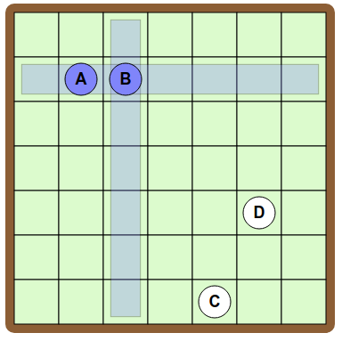
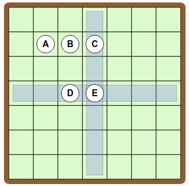
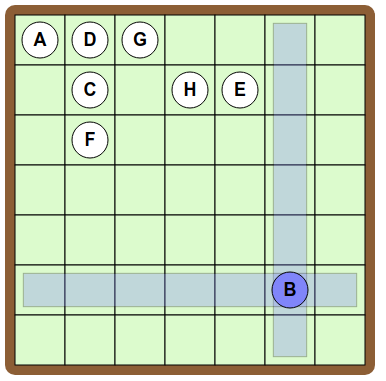

Solution
Pour relier A et B, plaçons ces jetons sur une même ligne.

Pour relier B et C, il faut placer C sur la même ligne ou bien sur la même colonne que B.
Mais si l'on place C sur la même ligne que B, alors on obtient un trait entre A et C que l'on ne souhaite pas avoir.

Il faut placer donc C sur la même colonne que B. Par exemple ainsi :

Il reste à placer D. Pour que D soit relié à C, mais que D ne soit pas relié à B ni A, il faut placer D sur la même ligne que C, tout en évitant la colonne de A. Voici une solution :

Il y a de nombreuses autres solutions, en voici par exemple une autre :

Pour relier A et B et C tous les trois entre eux, plaçons ces jetons sur une même ligne.

Ensuite, pour relier D à B, mais sans relier D à A ou à C, il faut placer D sur la même colonne que B.

Enfin, pour relier E à C et à D, il faut placer E sur la même colonne que C et sur la même ligne que D.

Une méthode efficace consiste à se concentrer sur les "triangles" qui sont formés dans le dessin objectif. En effet, un triangle reliant 3 jetons indique que ces 3 jetons se trouvent sur une même ligne ou une même colonne.
Pour relier A et D et G tous les trois entre eux, plaçons ces jetons sur une même ligne. Ensuite, pour relier D et C et F tous les trois entre eux, plaçons ces jetons sur la colonne de D.

Pour relier H et E et C tous les trois entre eux, on place H et E sur la ligne de C, tout en évitant les colonnes déjà utilisées.

Enfin, pour relier B à E et à F, il faut placer B à la fois sur la même colonne que E et sur la même ligne que F.

C'est de l'informatique !